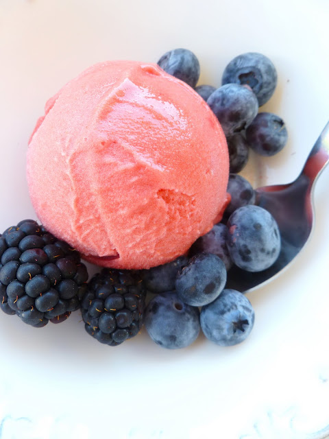

Cette recette a été présentée par François-Régis Gaudry sur son compte Instagram® , merci à lui !
Équeuter les fraises et les placer au congélateur pour la nuit.
Dans le bol d’un robot mixeur, verser les fraises avec le sucre glace et mixer une quarantaine de secondes jusqu'à ce que le mélange devienne granuleux.
Ajouter deux blancs d’œufs et mixer à nouveau une minute. Vous devez obtenir une texture glacée bien lisse.
Servir aussitôt.
Page principale